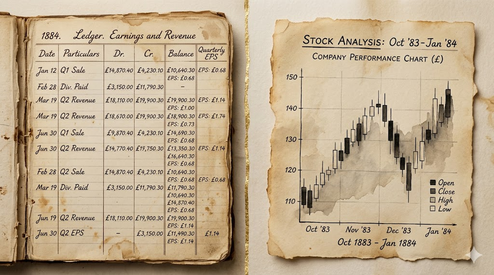
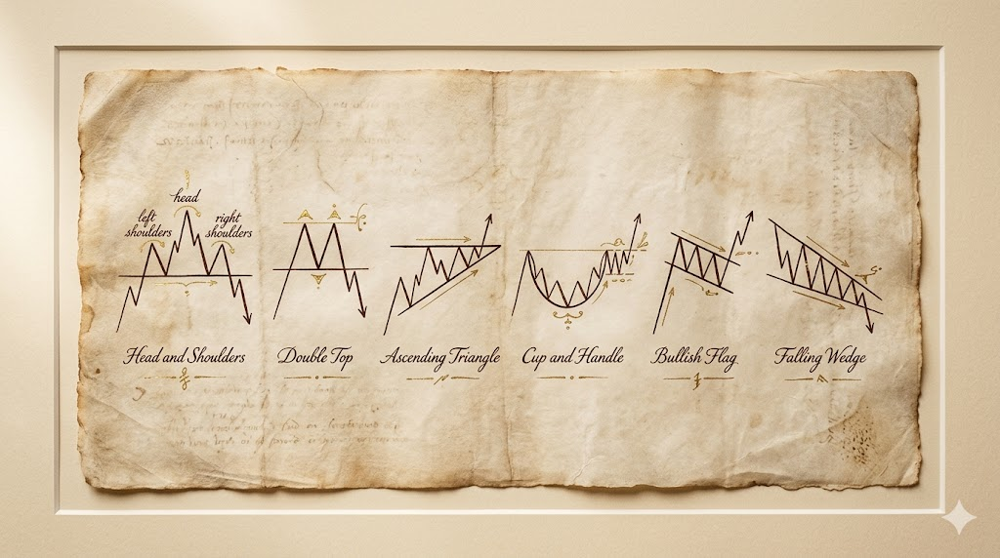
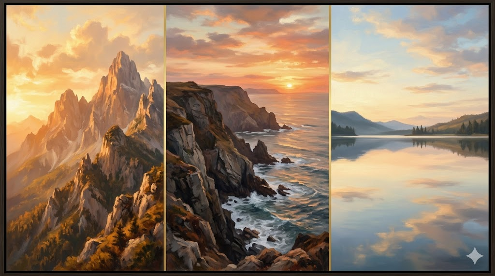
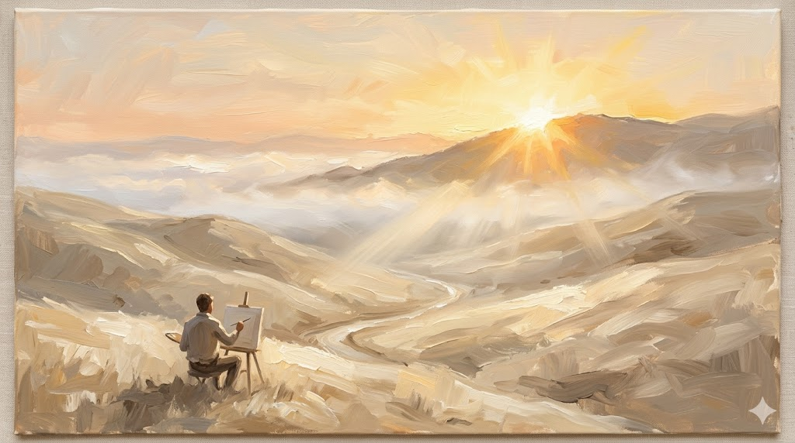
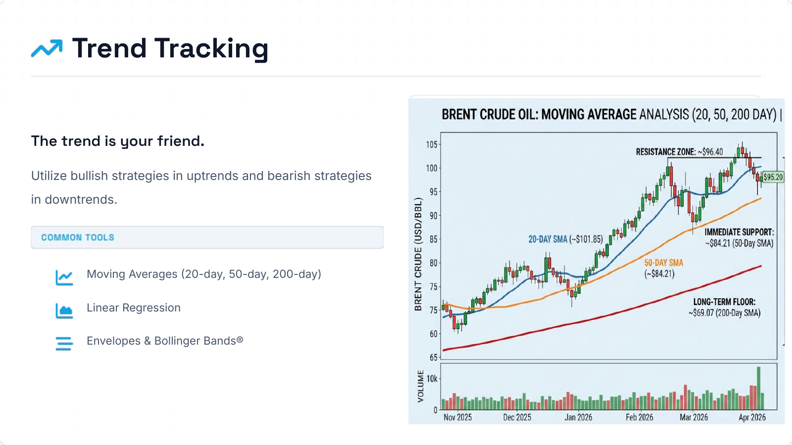
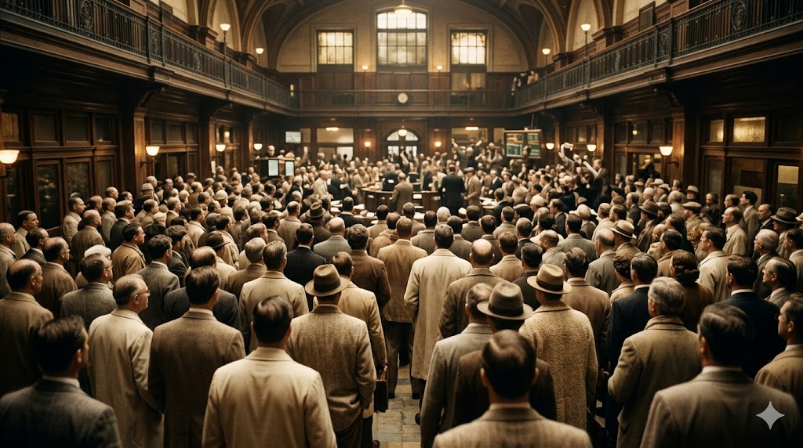

TECHNICAL
ANALYSIS
Understanding Market Movements Through Price & Volume
What is Technical Analysis?
The study of past market data — primarily price and volume — to forecast where the market is most likely to go next.
- TA answers WHEN to trade. FA answers WHAT.
- Used by day traders, hedge funds, retail investors, algos
- Works across stocks, forex, crypto, commodities
The Ancient Roots
Long before charts existed, humans were already reading markets.
- ~2000 BC — Babylonian clay tablets recorded grain & wool prices
- 1636–37 — Dutch Tulip Mania: bulbs 20× then −99%
- 1688 — Joseph de la Vega’s Confusion de Confusiones

Munehisa Homma & The Birth of Candlesticks
Dojima Rice Exchange · Osaka, Japan · 1700s
- $10B fortune in today’s money — just from rice trading
- Invented the candlestick — one mark encoding open, high, low, close
- His Sakata’s Five Methods are still on every CMT exam, 250 years later
Charles Dow & Modern TA
Wall Street, 1880s–1900s — the framework that built an industry.
- Co-founded Dow Jones & Co. (1882) and the Wall Street Journal
- Created the Dow Jones Industrial Average (1896, originally 12 stocks)
- Six tenets of Dow Theory — the DNA of every modern TA concept
The Early Pioneers
1900s–1940s — three men who shaped how we read markets.
- Richard Wyckoff — tape reader; composite operator, market phases
- W. D. Gann — geometric mystic; angles and time-price projections
- R. N. Elliott — wave theorist; 5 impulse + 3 corrective, Fibonacci ratios
From Textbook to Artificial Intelligence
1948 → Present — four eras that transformed TA forever.
- 1948 — Edwards & Magee publish Technical Analysis of Stock Trends
- 1970s–80s — computer charts and the rise of indicators
- 2000s–present — algorithmic trading, then neural networks
Why Technical Analysis Matters Today
From clay tablets to algorithms — the same patterns, at machine speed.
- The backbone of modern algorithmic trading
- Universal across stocks, forex, crypto, commodities
- Self-fulfilling — millions of traders watch the same levels
heavily driven by technical indicators
using TA tools every day
What We Will Cover Today
A complete journey from foundations to the future of trading.
- Block II — TA vs Fundamental Analysis & the three core principles
- Block III & IV — reading charts, candlesticks, S/R, indicators
- Block VI — live AI demo: DALIL, voice-controlled in Arabic
The journey through
Technical Analysis
begins now.
Next → TA vs Fundamental Analysis
Foundations
Technical versus Fundamental Analysis — and the three core principles every chart-reader stands on.
Two Lenses on the Same Market
Different questions, different tools, complementary answers.
- Fundamental: “Is this stock undervalued or overvalued?”
- Technical: “What will the price do next?”
- The most disciplined investors use both — FA picks WHAT, TA times WHEN
The Three Pillars of Fundamental Analysis
What value investors actually look at.
- Financial statements — income, balance sheet, cash flow
- Economic indicators — GDP, interest rates, inflation
- Industry & competitive position — moat, market share, growth
The Three Core Principles of Technical Analysis
Every indicator, pattern, and strategy rests on these three ideas.
- Price discounts everything — the chart already contains all known information
- Prices move in trends — not random walks; trends persist until reversed
- History repeats — human psychology produces recurring patterns

Technical vs Fundamental — The Comparison Grid
The same security — two different lenses.
- Time horizon: FA = months/years, TA = minutes/months
- Data: FA = financial statements, TA = price & volume
- Best for: FA = long-term investors, TA = traders & timing decisions

Classic Chart Patterns — Quick Reference
Six families every chart-reader meets across every market — reversal and continuation.
- Reversal: Head & Shoulders, Double Top/Bottom, Cup — trend exhaustion
- Continuation: Triangles, Flags, Wedges — breather inside a strong move
- Codified in Bulkowski’s Encyclopedia of Chart Patterns, the trader’s field guide
Reading the Market
Trends, candlesticks, and the language of price action.
The Three Trends Every Market Moves In
Charles Dow’s ocean metaphor — the tide, the waves, and the ripples.
- Primary trend — the tide; months to years
- Secondary trend — the waves; weeks to months
- Minor trend — the ripples; days; mostly noise

Trend Lines — Up, Down, Sideways
Every chart, on every timeframe, eventually settles into one of three structures — identify it before you reach for any indicator.
trendline drawn under the rising lows
trendline drawn over the falling highs
flat floor and flat ceiling
Three Ways to See Price Action
Line, Bar, Candlestick — each tells a different layer of the story.
- Line chart — closing price only; the cleanest big-picture view
- Bar (OHLC) — adds open, high, low; the precision view
- Candlestick — same data, painted; instant emotional read
The Line Chart — Closing Price Only
A real DJIA snapshot showing how a line chart strips everything away except the closing-price story.


The Language Japanese Rice Traders Invented
From Munehisa Homma in the 1700s to Steve Nison’s 1991 introduction to the West.
- A single candle encodes open, high, low, close in one mark
- Body length = conviction; wick length = rejection
- Standard on every modern trading platform — the universal language of price
Bullish vs Bearish Candles
A single candle compresses an entire session — who opened, who pushed, who closed.
Bullish Candle
Close above the open. Buyers controlled the period.
Bearish Candle
Close below the open. Sellers controlled the period.

When the Tide Turns Upward
Three candle formations that signal a downtrend is exhausting.
- Hammer — long lower wick; sellers driven back, buyers won the close
- Bullish Engulfing — large green body completely swallows prior red
- Morning Star — big red → indecision → big green; the ‘rebirth’ pattern
When the Tide Turns Downward
Three formations that appear at the peak — plus the great neutral pattern.
- Shooting Star — long upper wick; buyers pushed up, sellers slammed it down
- Bearish Engulfing — large red body engulfs prior green; visual of panic selling
- Doji — open = close; total indecision — warning at trend extremes
The Bearish Engulfing
A small green candle swallowed by a large red one — the visual definition of panic selling.
What you are seeing
A small green candle is fully covered by a much larger red candle that follows.
Support & Resistance — The Invisible Lines
Price levels where the war between buyers and sellers is fought, again and again.
- Support — the floor where buyers reliably step in
- Resistance — the ceiling where sellers reliably take profit
- Role reversal — broken support becomes new resistance, and vice versa
Support & Resistance — Tested, Held, Broken
Horizontal price levels where buyers and sellers reliably step in — until one side gives.
Resistance
A price ceiling where sellers reliably step in.
Support
A price floor where buyers reliably step in.
Static vs Dynamic Support & Resistance
Horizontal levels stay flat. Trendlines slope — they are the moving floor and ceiling of an active trend.
Horizontal Anchors
Levels stay flat regardless of trend.
Sloping Trendlines
Levels rise (or fall) with the trend.
Indicators
Mathematical lenses on price — trend trackers, oscillators, sentiment gauges, flow meters.
How to Choose Among 200+ Indicators
Match the indicator family to the question you’re actually asking.
- Trend trackers — map direction (Moving Avgs, Bollinger)
- Oscillators — time entries (RSI, Stochastic, MACD)
- Sentiment — read the crowd (VIX, Put/Call ratio)
The Moving Average & Bollinger Bands
The baseline of every trend-following system — and its 2σ envelope.
- Moving Average — smoothes noise; reveals direction
- Bollinger Bands — MA ± 2σ; envelope of normal volatility
- Price outside the bands = stretched move; expect reversion
The Four Quadrants of Technical Tools
Every indicator falls into one of four boxes — one axis is what it watches, the other is what it tells you.
Trend Tracking
Map the prevailing direction.
Flow of Funds
Track where money is actually flowing.
Oscillators
Catch reversal points by overbought/oversold.
Sentiment
Read the crowd — greed and fear extremes.
Measuring Momentum — When Speed Tells the Story
Like a ball thrown in the air — you can tell it’s about to fall when its rise slows.
- RSI — 14-period momentum on a 0–100 scale; >70 overbought, <30 oversold
- Stochastic — close vs recent range; spots short-term reversals
- MACD — momentum vs trend; the crossover signal traders watch
Brent Crude with Moving Averages
20- / 50- / 200-day moving averages layered on a real Brent Crude chart — the trend-tracker’s primary lens.


Polling the Crowd Before You Trade the Chart
The contrarian’s thermometer — sentiment extremes mark market turning points.
- VIX — the ‘fear gauge’; spikes mark capitulation lows
- Put/Call ratio — extreme readings = crowd is wrong
- AAII survey — retail sentiment; bullish extremes precede pullbacks
Combining Signals — The High-Conviction Trade
One indicator tells a story. Two from different quadrants tell the truth.
- Trend + Oscillator — classic combo: ride the trend, time the entry
- Sentiment + Trend — long-only bias when crowd is fearful in an uptrend
- Volume confirms everything — without volume, signals are suspect
Aligning the Engine to Your Investing Goal
Three holding periods, three different leading instruments.
Lead with Oscillators
Goal: Capture rapid reversals via momentum shifts and overbought/oversold extremes.
Trend + Oscillators
Goal: Ride established trends, using momentum tools strictly as secondary confirmations.
Sentiment + Flow
Goal: Determine market regime, identify historic tops and bottoms.
The Algorithmic Edge: Forecasting the S&P 500
Computational Economics (2025) 66:1715–1745 · Arauco Ballesteros & Martínez Miranda
A rigorous quantitative analysis of how neural networks synthesize Fundamentals, Technicals, and Market Sentiment to achieve a systemic informational edge.
Fundamentals
EPS · ROE · P/E Ratio
Technicals
Moving Avgs · RSI · Stochastic
Market Sentiment
Social Volume · Pos/Neg Ratio
The Multilayer Perceptron Input Architecture
A machine-learning system engineered to ingest millions of data points across three pillars and output precise daily trading signals.
Phase-by-Phase Machine-Learning Pipeline
From raw data to a tradable signal — how the model in the paper was actually built.
The Debate
Does Technical Analysis actually work? The Efficient Market Hypothesis, case studies, and honest limitations.
DALIL
Dynamic Analysis of Live Investment & Listings
A live voice-controlled Arabic interface combining everything we have just covered — trends, candlesticks, support & resistance, RSI, Bollinger, MACD — with neural-network market sentiment.
What follows is not a slide. It is a live demonstration.
→ Launch DALIL